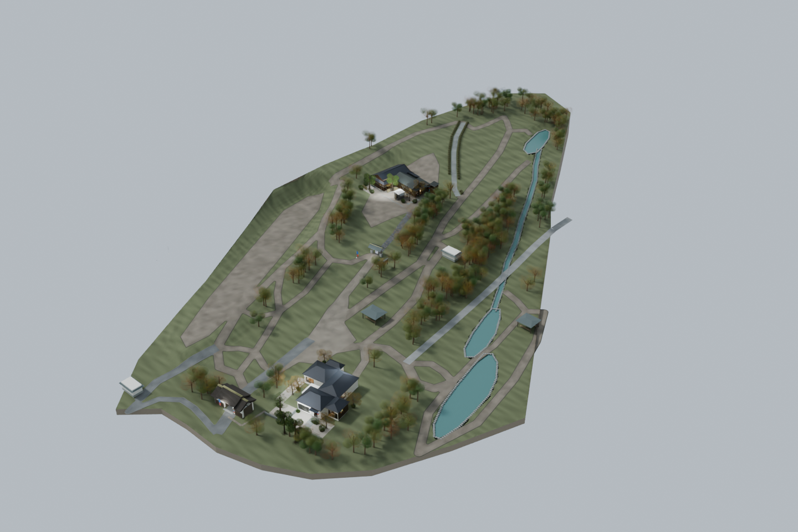
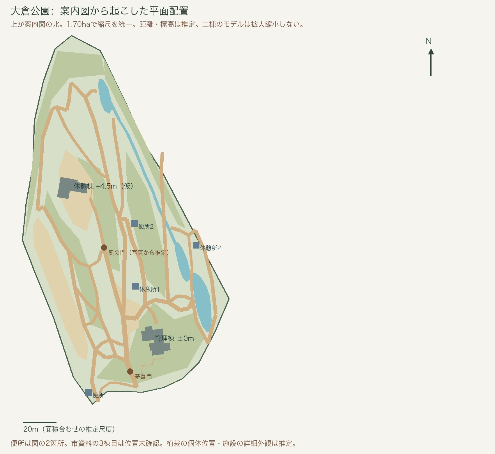

大倉公園と管理棟・休憩棟の 3D モデル
ワタナベエイジ展「Morning Monsters / W Eiji」（2025）の会場だった大倉公園の管理棟と休憩棟を、記録写真と大府市・文化財の公開情報から推定して Blender で復元したものです。公園全体は園内の案内図をもとに 11 月の会期の設営（茅葺門の暖簾、のぼり、ポスター）とともに組み、二棟を同じ場所に置いています。寸法・庭の配置・室の接続・公園の距離と標高には推定が含まれ、実測図に基づくものではありません。検討のために期間を限って置いています。
ブラウザで歩く
「エリア」で公園内・休憩棟・管理棟を選び、「見る場所」で視点を選びます。ドラッグで見回し、WASD・矢印キーか画面の矢印で移動します。休憩棟の「樽の梯子へ」で梯子を上って《空の夢／空の上》の中を覗けます。公園と二棟で合計約 175MB のデータを順に読むので、表示まで少し待ちます。パソコンの Chrome で確認しています。
Blender で開く
- rest.blend（休憩棟、約 19MB）
- management.blend（管理棟、約 31MB）
- okura_park.blend（公園全体に二棟を置いた統合版、約 61MB）
Blender 5.2 で作成。単位はメートル。開くと玄関前の視点で、タイムラインを再生すると玄関から各室を巡ります。屋根は Roof、天井は Ceilings のコレクションにあり、非表示にすると上から中を見られます。作品は Artworks、庭は Site にまとめてあります。
確認画像




記録
作品は概形と色で表し、錯視図版や作品写真は貼っていません。玄関のポスターと、管理棟の《蛇の回転錯視》のパネル（Rotating snakes, 2003：北岡明佳。展示写真からの転写）、《エデンの海、錯視から解放された魚》の試作プリント（写真提供：渡辺英治／錯視画像：北岡明佳。掲出位置は暫定）、進化ストリームの 3 図（図：渡辺英治／撮影：青木兼治）、月の錯視（元写真の撮影者は未確認）とログビネンコ錯視（A. Logvinenko の図）のパネル（展示写真からの転写）、休憩棟の 9 作品 19 面（線画・新聞・図鑑のページ・文字ボード・背景画・手形・背表紙・箱の印刷面。作品：渡辺英司／記録写真：青木兼治。作品写真の一部は撮影者未確認）と、公園の茅葺門の暖簾 2 枚（北岡明佳の図と同定。版・制作担当は未確認）、奥の門の錯視布 2 幅（作者・題名は未確認）、のぼりと案内板（展示写真からの転写。記録写真：青木兼治／一部はアートオブリスト実行委員会提供）だけ実物の画像を使っています。園内の案内図の画像はモデルに貼らず、配置の参照だけに使いました。記録写真との比較画像は、掲載許諾の確認前のため含めていません。